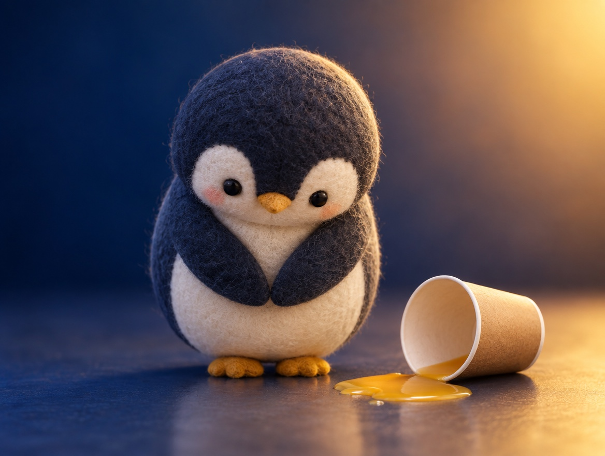

📝 DRAFT · 下書き — まだ本番に出していません · 下書き一覧
🐧 EVERYDAY LIFE⚡ 19 SEC
Say sorry fast and from your heart, and a mistake becomes trust 🙏

No Apology
People who do not say sorry are seen as "people you cannot trust."
The Belief
People cannot say sorry because they believe "saying sorry = being miserable."
The Truth
But really, "saying sorry = being brave."
⚡ TRY IT
Oops! What do you say?
☕ You spilled juice on your friend's notebook.
📕 You forgot to give back a book you borrowed.
⏰ You were 15 minutes late.
Hi! Shall we meet today? 😊
😮 …
Thanks for saying it. It's OK! 😊
Hmm… OK. 😑
…Did you not notice? 😠
⚡ Speed bonus!
A mistake happens. You have 3 seconds!
🏅 "I can trust this person!" Your mistakes became trust.
🙂 Not bad! Say sorry even faster.
😟 Trust went down. Try "I'm sorry" right away.
Fast And True
With no lies or excuses, say sorry right away, from your heart.
Trust Grows
Then your mistake turns into a chance to be seen as "a person you can trust."
📚 I learned this from the Japanese blog "Panda no Ondo".